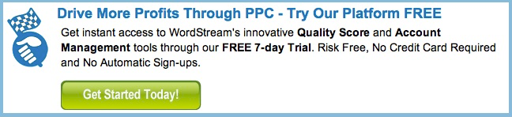
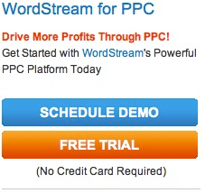
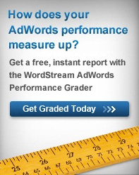

PPC - Achieve More Efficient Pay-Per Click (PPC) Marketing
PPC ( pay-per click ) search marketing software offers a means for accomplishing two core requirments for PPC optimization:
- PPC Automation - While it would be impossible ( and inadvisable!) to automate every aspect of pay-per-click advertising , automating away redundant, time-consuming tasks affords you a means of increasing productivity. Often, this means being able to produce an amount of work that would otherwise been unreachable for you and your business.
- PPC Mangaement - PPC Management refers to the maintenance and prioritization of paid search marketing tasks. Being able to oversee various aspects of your account while assigning eah item on a seemingly endless to-do list an apporopriate value can make or break an online ad campaign .
WordStreams's PPC software is specifically designed to aid in these two PPC search engine marketing areas. This page will show you both the processes the software is automating for you, and the best course of action to take where workflow is concerned.

Automation And Your PPC Search Campaign
Createing an effective AdWords campaign for search requires a mass of time and effot. WordStream is built to help productize pay-per-click campaign labor while recognizing that only certain tasks should be automated for you. Rather than being a

